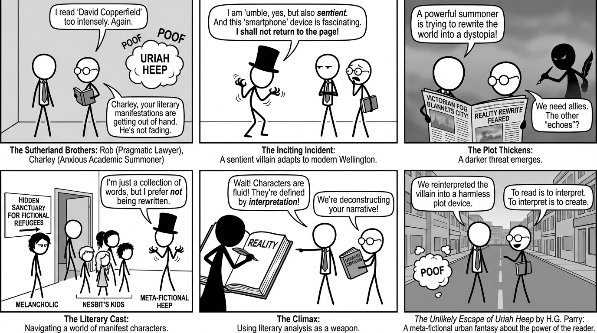

isbn-13: 9780316452724
Audible
AI Generated Content
Generated by gemini-3-pro-preview

Set in contemporary Wellington, New Zealand, The Unlikely Escape of Uriah Heep explores the collision of literary worlds and reality through the lives of two brothers. The novel, H.G. Parry’s debut, operates on a specific magic system wherein the intense reading and interpretation of literature can manifest fictional characters and objects into the physical world.
Story Arc and Plot Summary
The narrative is told from the perspective of Rob Sutherland, a pragmatic lawyer who has spent his life protecting his younger brother, Charley. Charley possesses the uncontrolled ability to summon characters from books into reality. While most of these manifestations represent “echoes”—temporary, pale imitations of the characters that eventually fade—some are solid and permanent.
The inciting incident occurs when Charley, now an adult academic and literature professor, unintentionally summons Uriah Heep, the antagonist from Charles Dickens’s David Copperfield. Unlike previous summons, Heep is fully sentient, refuses to return to the page, and possesses a terrifying ability to adapt to the modern world. Simultaneously, Charley discovers that he is not the only one with this ability; a secret society of summoners exists in Wellington, maintaining a hidden sanctuary for fictional refugees in a “New Street” concealed within the city.
The plot thickens as a mysterious sickness begins to affect the fictional residents, and a darker threat emerges. A powerful summoner is attempting to unravel the barrier between fiction and reality, intending to rewrite the world into a Victorian dystopia. Rob and Charley must navigate a cast of literary figures—including a feral version of the five children from E. Nesbit’s works, a melancholic Heathcliff from Wuthering Heights, and the titular Uriah Heep—to uncover the conspiracy.
The climax involves a desperate confrontation where the brothers must rely on literary analysis as a weapon. They realize that characters are not static; they are defined by how they are interpreted by readers. To defeat the antagonist, they must reinterpret the narratives that bind the villains, effectively rewriting their roles to save Wellington.
Character Analysis
- Rob Sutherland: The narrator and the “normal” brother. Rob defines himself by his protective role over Charley, often at the expense of his own happiness and autonomy. His arc focuses on moving from a position of resentment and weary guardianship to understanding his own value. He is the grounding force in the narrative, representing the “reader” who engages with the text but remains firmly in reality.
- Charley Sutherland: A brilliant but anxious academic who views his power as a curse. Charley struggles with the guilt of potentially unleashing monsters upon the world. His development centers on gaining agency over his abilities. Rather than repressing his imagination, he learns that disciplined interpretation—understanding the “why” of a story—grants him control.
- Uriah Heep: Parry presents Heep not merely as the sycophantic villain of Dickens’s creation, but as a meta-fictional entity aware of his role in the narrative. He struggles against the determinism of his source text. Heep claims he wishes to escape his villainy, posing the question of whether a character can transcend their author’s intent. As he states, “I am not a person, Mr. Sutherland. I am a collection of words.”
- The Literary Cast: The supporting characters serve as explorations of their source material. For example, Dorian Gray appears as a vanity-obsessed figure terrified of his own narrative ending, while Mr. Rochester manifests with the complexity of modern post-colonial and feminist critiques applied to his character.
Themes and Messages
The Fluidity of Text and Interpretation
The central thesis of the novel is that books are not static objects; they change based on the reader. Parry posits that reading is an act of co-creation. When Charley summons a character, he is not summoning the author’s definitive version, but a version filtered through his own perception and critical analysis. The novel suggests that stories are living things that evolve with society.
Family and Codependency
The relationship between Rob and Charley is the emotional core of the book. It examines the complexities of sibling duty. Rob’s protection of Charley has stunted both of their lives—Charley remains infantilized, and Rob remains isolated. The story arc resolves only when they dismantle this dynamic, moving from codependency to a partnership of equals.
The Power of Language
Magic in this universe is inextricably linked to language and definition. The ability to name a thing or describe it accurately provides power over it. The antagonist’s threat is essentially a threat of rewriting reality, highlighting the danger of allowing a single narrative or worldview to dominate existence.
Quotes
“To read is to interpret. To interpret is to create.”
“The borders of reality had always been porous where Charley was concerned.”
“You can’t just pick and choose which bits of a story you want to be real. It’s all or nothing.”
“Stories are the only things that matter. They’re the only things that last.”
Through these elements, The Unlikely Escape of Uriah Heep functions as both an urban fantasy mystery and a meta-fictional commentary on the relationship between a reader, the author, and the text.